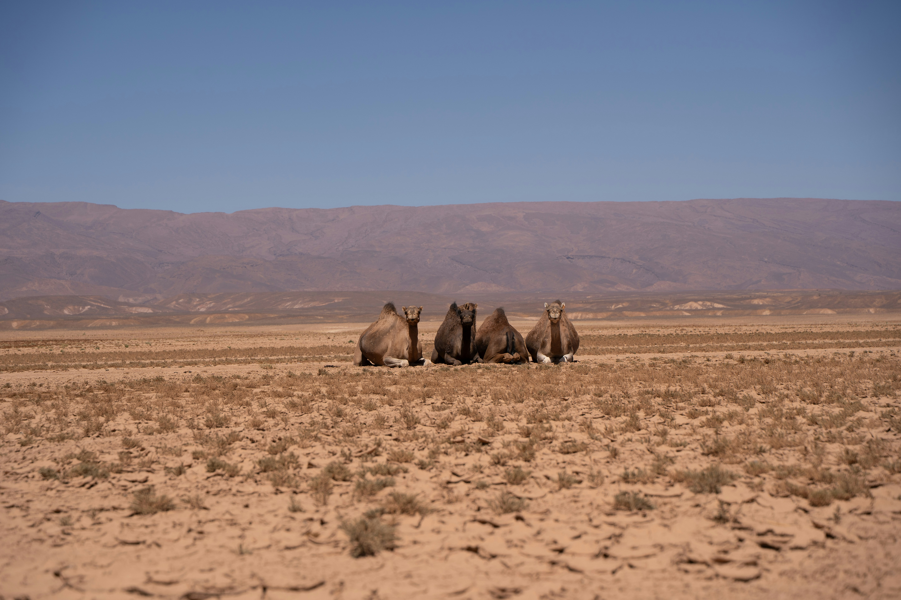
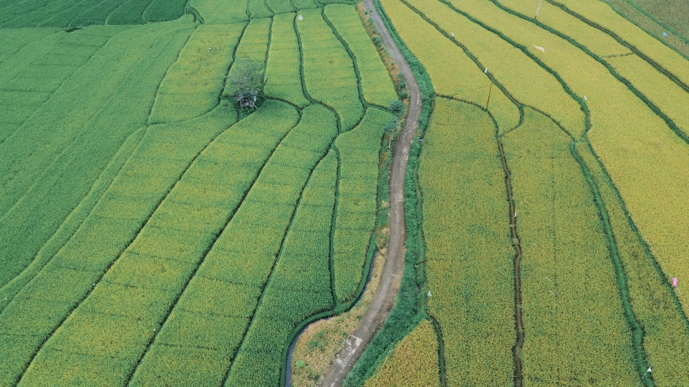
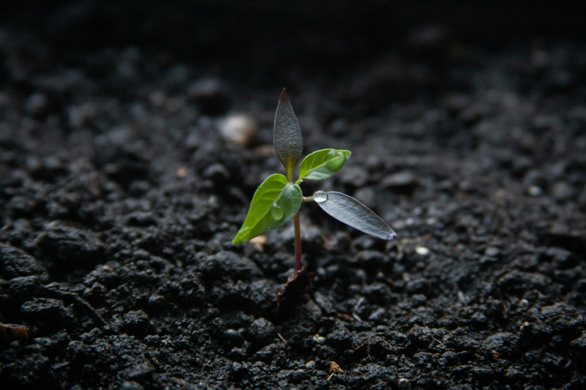

Importance of Sustainable Land Use
Sustainable land use ensures that land resources are managed efficiently without degrading the environment. It helps maintain soil fertility, supports food production, and protects natural ecosystems for future generations.
Proper land use planning reduces environmental damage such as deforestation, soil erosion, and desertification. It also helps balance human needs with environmental conservation.
By using land sustainably, communities can improve their livelihoods while preserving biodiversity and natural resources.

Sustainable Land Use Practices
Sustainable practices include crop rotation, agroforestry, and conservation agriculture. These methods improve soil health and reduce the need for chemical fertilizers.
Urban planning also plays a role by promoting green spaces and reducing overcrowding. Efficient land use in cities helps minimize pollution and improves quality of life.
Water management techniques such as rainwater harvesting and irrigation control are also essential for maintaining productive land.

Challenges in Land Use
Rapid population growth increases demand for land, leading to deforestation and habitat loss. Unsustainable farming and overgrazing also contribute to land degradation.
Industrial development and urban expansion often replace natural landscapes, reducing biodiversity and disrupting ecosystems.
Climate change further intensifies these challenges by causing droughts, floods, and soil degradation.

Impact of Climate Change on Land
Climate change affects land productivity through rising temperatures and unpredictable rainfall patterns. These changes reduce crop yields and threaten food security.
Soil quality is also impacted, with increased erosion and loss of nutrients. This makes it harder to maintain sustainable agricultural practices.
Adapting land use strategies is essential to reduce these impacts and ensure long-term sustainability.

Land Management Strategies
Effective land management includes reforestation, soil conservation, and controlled land development. These strategies help restore degraded land and improve ecosystem health.
Governments and organizations can implement policies that promote sustainable land use and protect natural areas.
Community involvement is also important in maintaining land resources and encouraging responsible practices.

Policies and Global Efforts
Many countries are adopting policies to regulate land use and prevent environmental degradation. These include zoning laws and environmental protection regulations.
International initiatives promote sustainable development and encourage countries to work together in managing land resources.
Non-governmental organizations also support land conservation projects and raise awareness globally.
How You Can Help
Individuals can contribute by reducing waste, conserving resources, and supporting sustainable agriculture. Small actions can have a significant impact on land conservation.
Planting trees and protecting green spaces helps improve land quality and biodiversity.
Raising awareness and educating others about sustainable land use encourages more responsible behavior.
